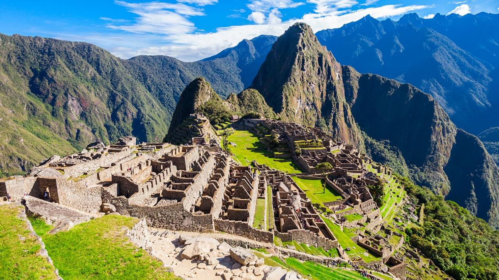

Machu Picchu es el sitio arqueológico inca más sobresaliente debido a su creativo diseño urbano, la belleza de su arquitectura y el fino trabajo en piedra de sus construcciones. En su planificación se aprovechó notablemente la topografía de la cima de la montaña a la que transformó en una imponente llaqta.
